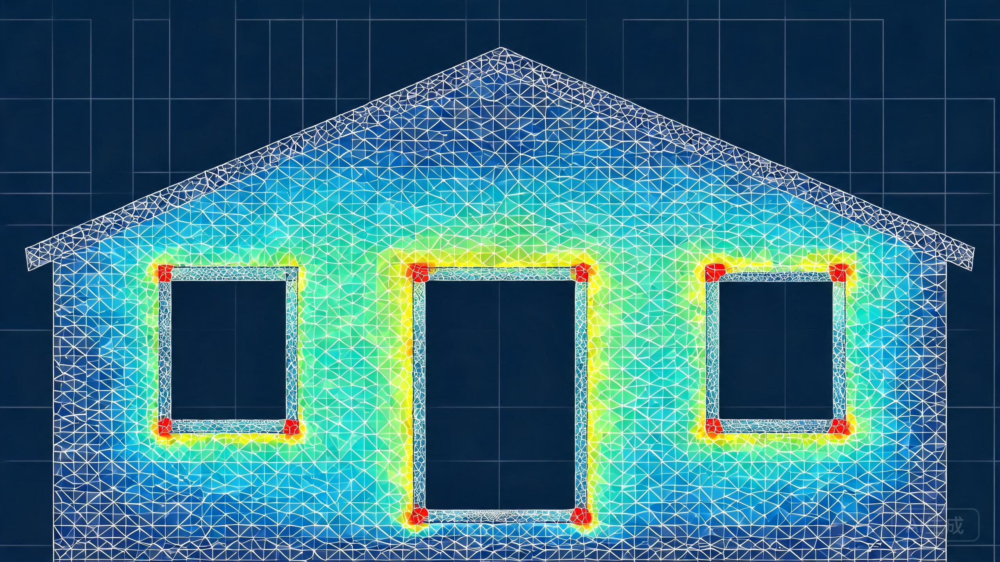

在浏览器内完成真实的有限元求解：Delaunay 网格离散 · CST 平面应力单元 · 稀疏矩阵共轭梯度求解，并以三维房屋模型实时呈现门、窗洞口角部的应力集中与墙体的变形。
拖动下方参数，模型将自动重新划分网格并求解，3D 房屋应力云图随之刷新。转动视角，观察门窗洞口角部的应力集中、荷载绕过洞口的拱效应，以及墙体的变形。
分析对象为一栋砖混房屋的山墙（横墙立面）：墙身 6000 mm 长、檐口高 3000 mm，其上为双坡屋面轮廓（坡屋脊再抬高 1500 mm），墙厚 240 mm。墙面上开有一个门洞（700 mm 起齐地面，高 2100 mm）和两樘窗洞（窗台 900 mm、窗顶 2100 mm）。门窗洞口尺寸可在上方模型中实时调整。材料为 MU10 砖、M5 混合砂浆砌筑的砖砌体，处于线弹性范围内。
| 类别 | 参数 | 取值 / 说明 |
|---|---|---|
| 几何 | 墙长 W × 檐口高 H₁ × 墙厚 t | 6000 × 3000 × 240 mm |
| 几何 | 坡屋脊抬高 H₂（山墙三角形轮廓） | 1500 mm（屋脊总高 4500 mm） |
| 几何 | 门洞（宽 × 高，位置固定） | 600~1200 × 2100 mm @ x=700 起 |
| 几何 | 窗洞 ×2（宽 × 高，窗台 900 mm） | 600~1200 × 1200 mm @ 中心 x=3400 / 5000 |
| 材料 | 砖砌体（MU10 砖 · M5 砂浆）弹性模量 E | 2.4 GPa（E=1600f） |
| 材料 | 泊松比 ν | 0.15 |
| 材料 | 抗拉强度 ft（沿齿缝）/ 抗压强度 fc | 0.11 / 1.5 MPa |
| 工况 A | 竖向：屋面线荷载沿两坡传递 q | 5 ~ 60 kN/m（默认 20 kN/m，竖直向下） |
| 工况 B | 水平：风力经楼盖传至墙顶 F | 10 ~ 120 kN（默认 30 kN，沿左墙边均布） |
| 工况 C | 组合（A + B，默认） | 可切换仅竖向 / 仅水平 |
| 边界 | 基础顶面约束 | 底边全固定（ux=uy=0） |
| 载荷施加 | 分布荷载处理 | 按节点影响长度折算为等效节点力（Σw=边长） |
| 本构 | 假设 | 平面应力 · 线弹性 · 小变形 |
flowchart LR A["几何参数
门/窗洞口尺寸"] --> B["Delaunay 三角化
洞边放射加密"] B --> C["CST 平面应力单元
刚度矩阵组装 (CSR)"] C --> D["等效节点荷载
屋面 q / 风力 F"] D --> E["预条件共轭梯度法
稀疏线性方程组 K·u=f"] E --> F["节点应力恢复
σx σy τxy → σ₁ / vM"] F --> G["角部峰值 · 基底应力
开裂与受压评定"] G --> H["Three.js 3D 云图
变形放大可视化"]
云图中最直观的现象是：主拉应力"红斑"集中在窗洞与门洞的四个角部，尤其是窗顶两角与窗台两角。矩形洞口的内凹角是典型的应力奇异点——竖向压力绕过洞口传递时，力线在角部急剧弯折，产生显著的局部拉应力。砖砌体的抗拉强度仅约 0.11 MPa（沿齿缝），远低于其抗压强度，因此角部主拉应力是控制设计的关键指标。工程中常见的"窗角斜裂缝"正是这一力学机理的直接体现[1][3]。角部峰值应力可从上方指标卡实时读取，并与抗拉强度自动评定。
需要说明：内凹角在弹性理论上是应力奇异点，网格越细、计算峰值越高。本模型以角点邻域（0.9 倍单元尺寸）的节点主拉应力峰值作为工程指标，其绝对值具有网格依赖性，但随洞口尺寸、荷载水平的变化趋势是稳定可信的——洞口越大、荷载越大，角部拉应力越高，开裂风险越大。
竖向工况下，σy 云图清晰地展示了荷载绕过洞口的拱式传递：门洞上方的墙体形成"荷载桥"，压应力流呈拱形绕过洞口汇聚到两侧窗间墙和门间墙，最终传入基础。图 3-1 的基底压应力分布直接印证了这一点：门洞正下方基底压应力接近于零（该处无墙体），洞口两侧墙趾处应力显著高于净截面名义值，呈现典型的 toe-ing 现象。窗间墙（两窗之间及窗与墙边之间的墙段）是竖向传力的关键通道，其宽度直接决定基底压应力的峰值水平。
门洞正下方压应力趋近于零，洞口两侧墙趾处出现应力峰值——这就是拱效应在基础反力上的直接体现。加大门洞或窗洞都会使墙趾应力进一步抬升。
图 3-2 将四类关键应力水平放在一起对比：FEA 洞口角部主拉峰值对照砌体抗拉强度、FEA 基底最大压应力对照砌体抗压强度。砖砌体"拉弱压强"的特性一目了然——受压通常有较大裕度，而角部抗拉往往率先见顶。调整窗宽、屋面荷载或风力，观察两对柱高的相对变化，即可理解为什么洞口角部需要构造配筋。
角部主拉峰值超过 0.11 MPa 即表明按素砌体评估将出现开裂（本模型仍按线弹性计算，此时结果仅作开裂风险趋势参考）。
风荷载工况下，墙体作为竖向悬臂深梁承受面内剪弯。由于墙体平面内截面高度达 6 m（洞口仅局部削弱），平面内侧向刚度非常大，墙顶水平位移与位移角都很小（观察指标卡中 ux,max 与位移角）。这也是砖混结构中横墙（剪力墙）能够可靠承受风与地震水平力的原因——真正的薄弱环节不在整体侧移，而在洞口角部的局部拉应力。切换到"仅水平"工况并把风力拉满，可以从云图上看到左下角与右下角的斜向主压应力带（对角撑杆效应）。
窗台与窗顶四角是斜裂缝高发部位。建议在洞口四角 45° 方向设置钢丝网片或 2Φ6 斜向加强筋（每边伸入墙内 ≥800 mm），或整片设置玻纤网抗裂砂浆层，可显著降低角部开裂概率。
门窗顶必须设置钢筋混凝土过梁承担洞口上方荷载；墙顶设现浇钢筋混凝土圈梁、墙角与洞口两侧设构造柱，与圈梁形成"边框"，将砌体分割包围，大幅改善房屋整体性与角部应力状态（GB 50003 强条要求）。
洞口越大、越密集，拱效应传力路径越窄。建议窗间墙宽度不小于 1.0 m，避免洞口齐边布置（墙趾应力集中加剧）；大开洞工况下应按本文方法复核窗间墙受压与角部抗拉。
砌体抗拉强度对砂浆强度等级敏感（M5→M10 抗拉约提高 50%）。保证灰缝饱满度（≥80%）、控制砌筑龄期后再加载，屋面找坡避免积水渗入灰缝软化砂浆，均可有效维持角部抗裂能力。